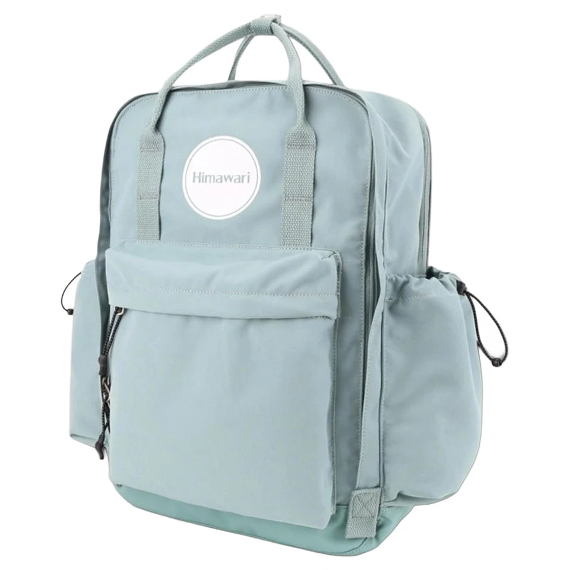

백팩을 보낼 상자는 가방을 정돈한 뒤

가방을 가족에게 보내거나 수선 접수로 발송하려고 하면 집에 있는 상자를 먼저 찾게 됩니다. 상자가 작으면 가방을 접거나 눌러 맞추고 싶어질 수 있습니다. 보낼 제품의 안내와 접수처의 포장 조건을 확인한 뒤 가방을 정돈하고 그 모습에 맞는 상자를 고르는 순서로 준비해 봅니다. 빈 가방이 되었다는 사실만으로 어느 부분이든 접을 수 있다고 판단하지 않습니다.
보내는 구성은 포장 전에 정한다
실제 가방의 모든 자리를 열어 개인 소지품을 꺼냅니다. 작은 포켓의 열쇠와 카드, 종이 자료도 봅니다. 다른 가족의 물건이 남아 있다면 임의로 포함하거나 버리지 않고 따로 모아 알려줍니다. 함께 보낼 구성품은 목록으로 정하고 집에 남길 소품과 나눕니다. 수선이나 반품 접수라면 접수처가 요구하는 구성과 자료를 기준으로 준비합니다.
주소와 수취처는 안내받은 정보를 다시 읽습니다. 이전에 같은 판매처로 보낸 기록이 있어도 현재 접수 안내와 같은지 확인할 수 있습니다. 제품 식별에 필요한 자료가 있다면 요청받은 범위를 준비합니다. 주문 정보나 개인정보를 상자 밖에 불필요하게 보이도록 붙일 필요는 없습니다. 가방의 상태와 보낼 구성품은 포장 전에 개인 기록으로 남겨두면 이후에 무엇을 포함했는지 확인할 수 있습니다.
사진은 전체 모습과 별도 구성품이 연결되도록 남깁니다. 포장 전부터 손상이나 문의할 상태가 있다면 그 위치도 기록합니다. 배송을 위해 정리하는 과정에서 문제 부위를 더 벌리거나 임의로 수선하지 않습니다. 접수 전에 해야 할 관리와 손대지 말고 전달해야 할 상태가 무엇인지 해당 안내를 따릅니다. 준비한 목록과 실제 물건을 대조한 뒤 제품 형태를 정리합니다.
자연스러운 형태와 끈의 위치
내용물을 비운 뒤 가방의 원래 모양을 가볍게 정돈합니다. 보강된 부분이나 접어도 되는 범위를 추측해 상자 크기에 맞추지 않습니다. 제품에서 안내하는 포장 방식이 있다면 그것을 우선합니다. 형태를 받칠 재료를 넣으려면 해당 제품에 맞는지 확인하고 원단을 팽팽하게 밀어내지 않습니다. 빈 가방의 형태를 유지하는 일과 단단하게 채워 부피를 만드는 일을 구별합니다.
어깨끈과 남는 끈은 자연스럽게 모아 정리합니다. 끝부분이 상자 밖으로 나오거나 뚜껑의 경로를 지나가지 않는 위치로 둡니다. 금속 부품이나 지퍼 장식이 같은 면을 누르는지 보고 포장 안내에 맞는 부드러운 재료로 나눌 수 있습니다. 테이프를 가방 원단에 직접 붙여 위치를 고정하지 않습니다. 분리 가능한 구성품은 원래 허용하는 경우에만 분리하고 작은 묶음으로 표시합니다.
Himawari No.1089을 발송할 때에도 지금 보낼 가방과 부속품을 기준으로 포장을 준비합니다. 제품 정보에서 모델을 확인하고 개인 물건을 비운 다음 자연스럽게 정돈한 모습을 기록합니다. 상자의 뚜껑을 닫기 전 목록과 실제 구성품을 한 번 더 대조합니다. 받는 사람이 제품과 별도 소품을 같은 배송 안에서 알아볼 수 있도록 위치를 정하는 순서입니다.

상자를 닫을 때 무엇이 눌리는지
안내에 맞는 보호 포장을 마련하고 정돈한 가방의 크기로 상자를 고릅니다. 가방을 넣은 뒤 빈 공간과 뚜껑 위치를 봅니다. 뚜껑을 얹으려면 손잡이나 윗부분을 계속 눌러야 한다면 상자를 다시 고릅니다. 옆면이 밀려나도록 포장재를 과하게 채우지 않고 실제 접수 조건 안에서 흔들리는 공간을 정리합니다. 상자를 봉할 수 있다는 사실과 제품을 자연스럽게 놓았다는 확인을 나누어 봅니다.
가방이나 포장재에 물기가 남아 있으면 그 상태로 봉하는 준비를 서두르지 않습니다. 제품의 관리 안내에 맞춰 정리한 뒤 포장할 상태를 봅니다. 어떤 재료든 넣으면 습기를 해결할 것이라고 판단하지 않습니다. 포장 일정과 접수 예정 시간이 정해져 있다면 필요한 준비가 끝나지 않았을 때 일정도 조정할 수 있습니다. 받은 안내를 따를 수 있는 상태로 만드는 일이 발송일을 맞추는 일보다 먼저 필요할 수 있습니다.
상자 안에서 작은 구성품이 어느 위치로 움직일지 살펴봅니다. 이름이 적힌 작은 묶음은 제품과 구별할 수 있는 자리로 두고 실제 포장 안내를 따릅니다. 필요한 접수 메모는 가방에 직접 붙이기보다 받는 사람이 찾을 위치에 놓을 수 있습니다. 제품 표면과 단단한 부품이 바로 만나는지 확인하면 봉하기 전에 조정할 곳이 보입니다. 새 포장을 더하는 경우에도 현재 구성이 눌리지 않는지 다시 봅니다.
열어볼 사람의 순서로 마친다
상자 위쪽을 열었을 때 바로 가방이 칼날과 만날 수 있는지 생각하고 접수 안내에 맞는 보호층을 마련합니다. 받는 사람이 먼저 읽을 자료와 가방, 별도 구성품의 위치가 이어지도록 정합니다. 목록에 적었지만 실제로 빠진 물건이 없는지 봉하기 전에 대조합니다. 상자 밖으로 나온 끈이나 포장재가 있으면 현재 상태를 정리한 뒤 여밈을 마칩니다.
이용할 배송 서비스의 현재 접수 규격과 포장 조건은 해당 공식 안내에서 확인합니다. 수선 접수처나 판매처의 요구와 배송 서비스의 조건이 함께 적용될 수 있으므로 필요한 항목을 구별합니다. 하나의 방법이 모든 운송 중 손상을 막는다고 보장할 수는 없습니다. 현재 제품을 압축하지 않고 안내된 상태로 포장했는지와 필요한 자료가 포함되었는지를 기준으로 준비합니다.
발송 후에는 접수 정보와 보낸 구성의 개인 기록을 함께 남깁니다. 수취처에서 추가 질문이 오면 포장 전 사진과 목록을 참고해 답할 수 있습니다. 상자에 들어간 것을 기억으로 늘리기보다 실제 포함한 상태를 기준으로 설명합니다. 가방을 정돈한 크기에 맞춰 상자를 고르고 봉하기 전에 구성을 읽었다면 배송 준비에서 무엇을 확인했는지도 기록 안에 남습니다.